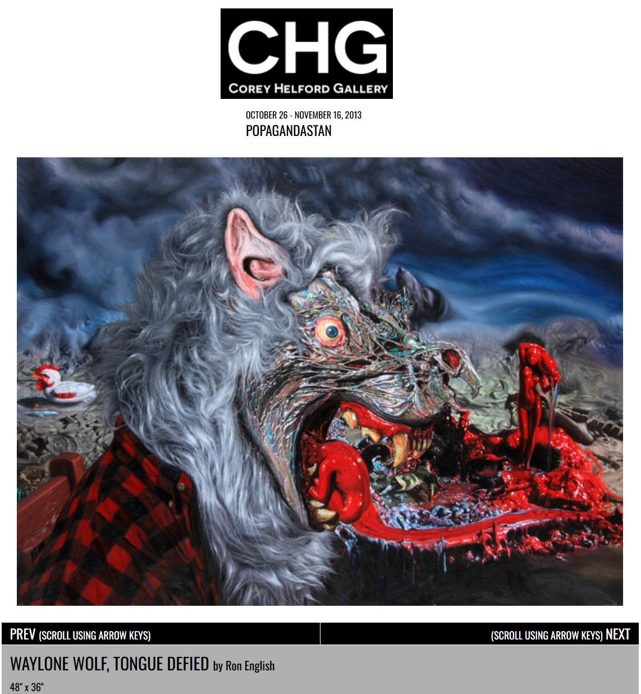
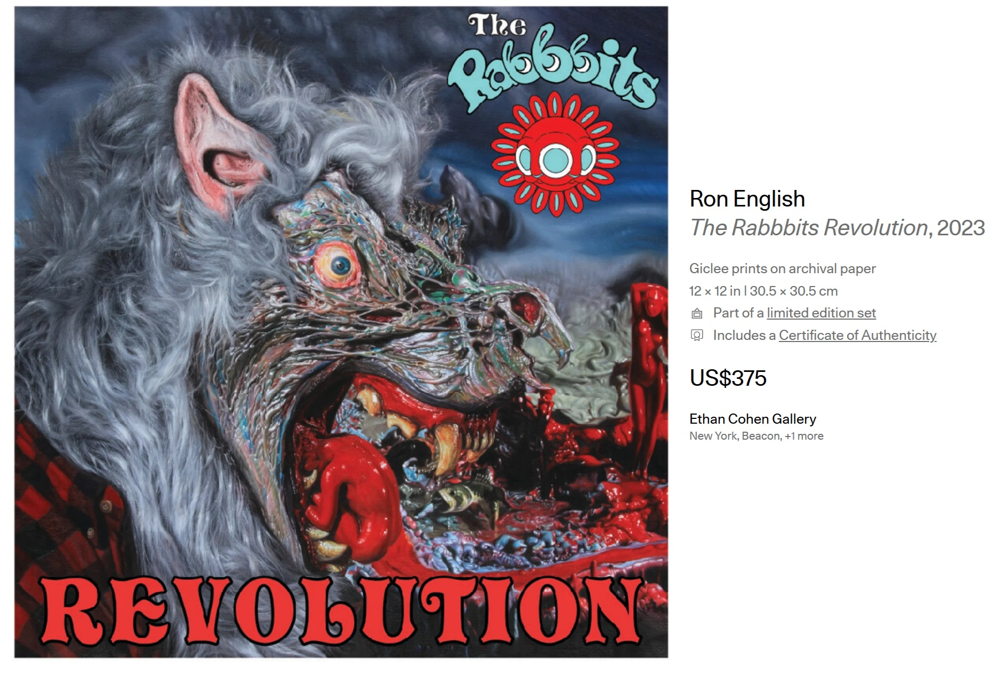
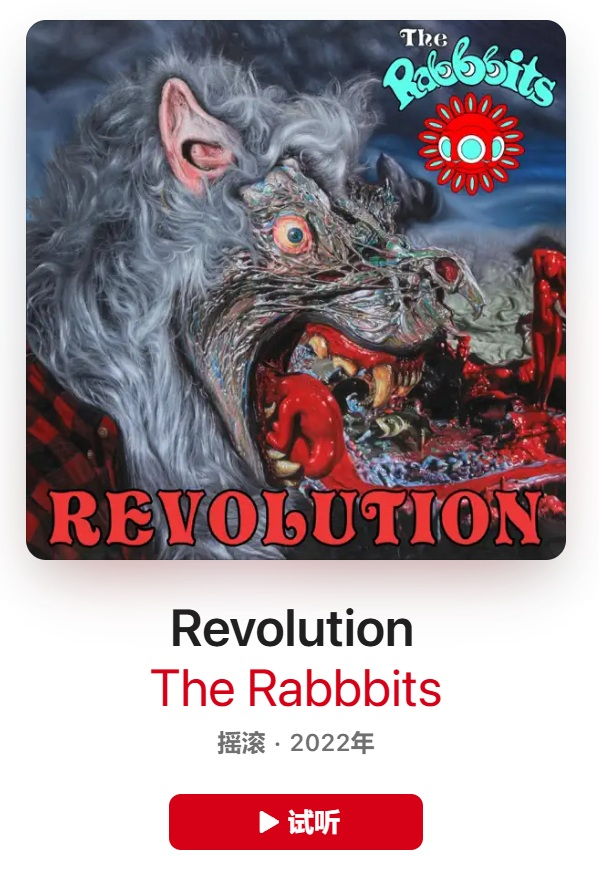
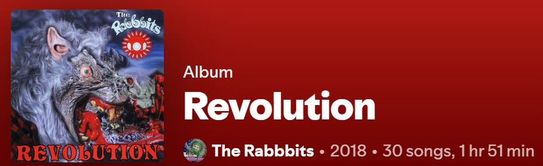
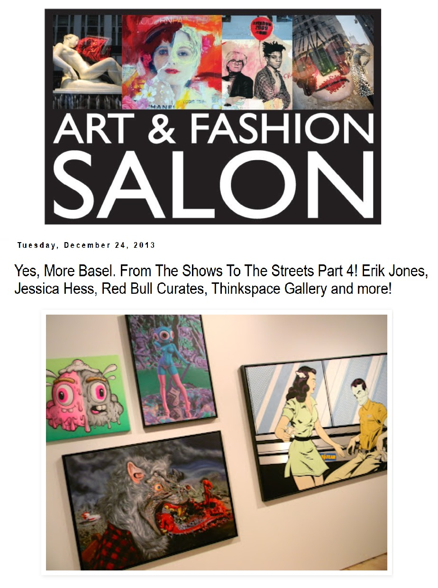

Exhibitions
POPAGANDASTAN – New Works from Ron English, Corey Helford Gallery, Los Angeles, California, US, October 26–November 16, 2013.
Literature
Ron English, Fauxlosophy: The Art of Ron English (San Francisco: Last Gasp, 2016), p. 56. ISBN 978-0867196566.
Ron English, Death and the Eternal Forever (Korero Press, 2014), p. 95. ISBN 978-0957664920.
Ron English, Status Factory: The Art of Ron English (San Francisco: Last Gasp of San Francisco, 2014), p. 193. ISBN 978-0867197891.
Ron English, Original Grin: The Art of Ron English (Paris: Cernunnos, 2019), p. 162. ISBN 978-2374950938.
Notes
Also known as Tongue Defied.
The image reproduced in Original Grin is not the painting itself but a photograph of the reference set.
This composition was later used for The Rabbbits’ album Revolution and adapted by the artist as a limited-edition print in the Vinyl Chord: A Revolutionary Record Store series.
The image also appears on a Waylone Wolf sideshow banner created by Ron English.
Ancillary Documentation







Selected Online Circulation
Selected examples of the work’s online circulation, reproduction, or discussion. This list is not exhaustive; it is intended to document representative appearances of the image beyond formal exhibition and publication records.